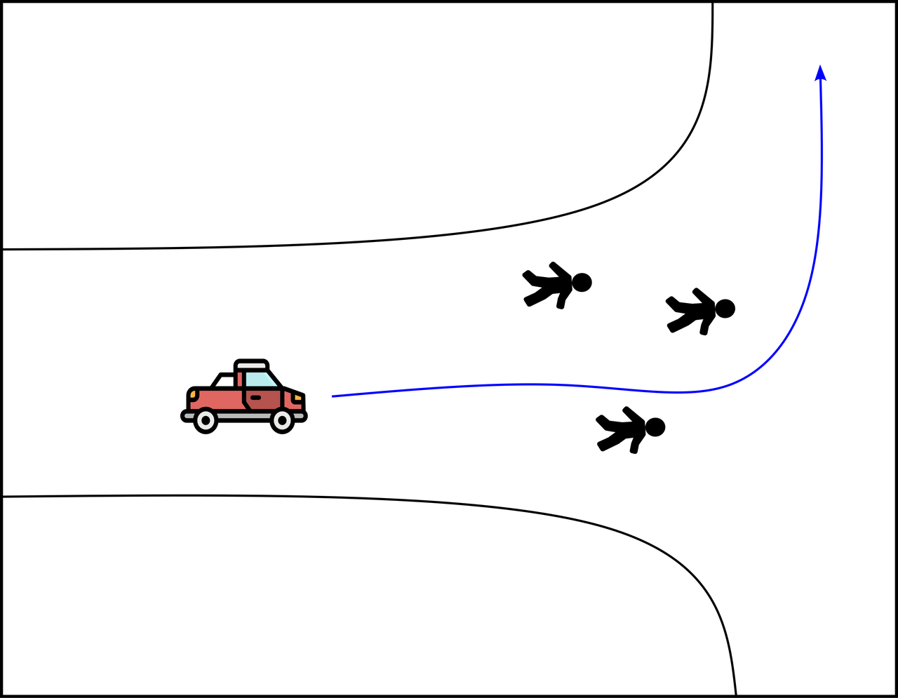

Why Deep Learning Sucks
After spending some years studying and using deep learning, I always suffered from the difficulty of debugging errors, or setting hyperparameters. As a researcher this can not only waste additional time, but also money and resources. In this article, we will demonstrate how traditional rule-based methods have a hidden edge (beside simplicity) in solving complex problems that require automation.
Self-driving cars problem:
Let's assume we want to solve the self-driving car problem where the car needs to navigate safely to its destination while avoiding crashing with other objects, as shown in the picture below.

The way of thinking (with deep learning):
A deep learning engineer will start by looking for sub-problems that have already been solved using state-of-the-art networks. For example, they may look directly for object detection models like YOLO and then planning modules like Chauffeurnet. In this case, the task is practically solved; however, as we don't care about what's going on inside these models, we are tempted to just pass the live camera feed regardless of important pre-processing steps (e.g., image enhancement or simple detection of road lanes).
Additionally, deep learning engineers may not consider filtering for noise or taking detection uncertainty into account for the planning of route. This can lead to inaccurate predictions and potential safety hazards.
The way of thinking (without deep learning):
On the other hand, a non-deep learning engineer will start by deeply analyzing how to make the problem solvable through simple logic rules. For example, all we care about in detection is driving within the road. We can achieve this by identifying the road as an easily distinguishable element using image processing steps such as detecting line patterns and asphalt color. Furthermore, we will also consider other traffic entities on the road by employing background subtraction techniques.
For planning, a general algorithm like the social force model can be used to find the shortest path to the destination while avoiding obstacles. This solution may seem less reliable at first glance; however, when calibrated and tested well, its performance-to-investment ratio can be surprisingly high.
Real-world applications of traditional rule-based methods:
Traditional rule-based methods have been successful in a variety of real-world applications where deep learning approaches may not perform as well or are less suitable. Some examples include:
- Fraud detection systems that analyze transaction data and identify patterns to detect fraudulent activities, such as credit card transactions with unusual spending habits.
- Spam filtering systems used by email services that use rules-based algorithms to identify and filter out unwanted emails based on factors like sender reputation or message content.
- Speech recognition systems in call centers where traditional rule-based methods can accurately recognize spoken words, even when there is background noise or accents present.
- Robotics applications that require precise control over movements and actions of robots to perform tasks such as picking up objects from a table or assembling components for manufacturing processes.
Limitations of deep learning:
While deep learning has revolutionized many aspects of artificial intelligence, it is not without its limitations. Some challenges associated with deep learning include:
- Computational complexity - Deep neural networks can be computationally expensive to train and require large amounts of data for effective modeling.
- Data scarcity - In some cases, there may simply not be enough training data available to effectively train a deep learning model, leading to suboptimal performance or overfitting issues.
- Lack of interpretability - Deep neural networks can be difficult to understand and interpret, making it challenging for humans to explain how the model arrived at its predictions or decisions.
- Difficulty in debugging - Debugging errors in deep learning models can be time-consuming and require specialized skills, such as identifying issues with specific layers of a neural network or optimizing hyperparameters.
- Ethical concerns - Deep learning systems may have unintended consequences that could lead to biases or discrimination against certain groups if not properly designed and tested for fairness.
Conclusion:
In this post, we just want to clarify the advantage of the workflow without deep learning. Deep learning makes us lazy, because we just learn to "smash" all the inputs unprocessed together and let the magic happen. The danger here is first in developing this mentatlity and an even bigger danger, is letting such not-fully understood system run indepedntly.
The optimal way is to 'deepen' your own learning, and then lastly to involve some neural networks for the really high-order non-linear relationships in your model.